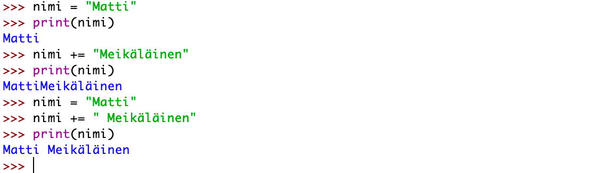

Muuttuja on säilytyspaikka arvolle tietokoneen muistissa. Pythonissa muuttuja on helppo tehdä. Annetaan muuttujalle nimi (Pythonissa muuttujan nimi aloitetaan pienellä kirjaimella, se ei voi alkaa numerolla, eikä nimessä voi olla välejä). Usemmasta sanasta koostuvaan muuttujaan sanojen väliin laitetaan "_"-merkki), "=" merkki ja sitten muuttujalle annettava arvo. On olemassa sekä paikallisia (lokaaleja) että yleisiä (globaaleja) muuttujia. Ne tulevat ajankohtaisesti siinä vaiheessa, kun opiskellaan funktion käyttöä Pythonissa.
Tällä komennolla annetaan muuttujalle numero arvo 3.
numero = 3Tällä komennolla saadaan muuttujan numeron arvo muuttumaan yhtä suuremmaksi eli neljäksi.
numero += 1
Tällä komennolla annetaan muuttujalle nimi arvo Matti.
nimi = "Matti"Huomaa, että merkkijono arvona vaatii lainausmerkit arvon ympärille.
Tällä komennolla voidaan muuttujaan nimi lisätä toinen nimi (huom. tyhjä väli pitää huomioida arvoa syötettäessä)
nimi += " Meikäläinen"Tältä näyttää, kun ensiksi väli unohdetaan ja sitten virhe korjataan.
